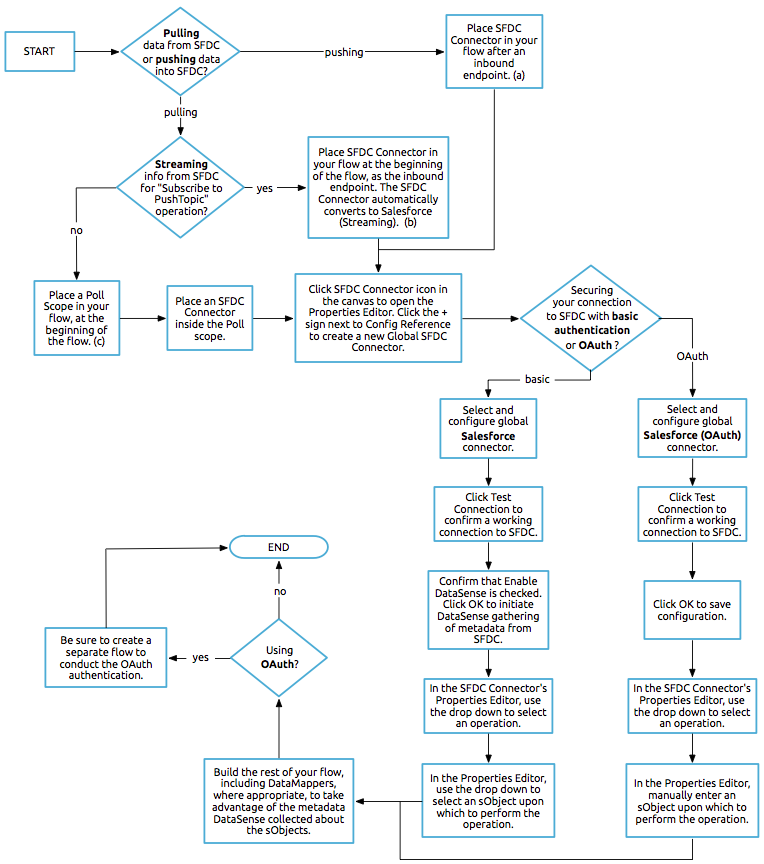

Salesforce Connector
Release Notes: Salesforce Connector Release Notes
Technical Reference: Salesforce Connector Technical Reference
Anypoint Exchange: Salesforce Search
The Anypoint Connector for Salesforce lets you connect to the Salesforce platform. The connector exposes convenient methods for exploiting the capabilities of Salesforce, including working with Apex classes.
The connector executes API calls targeting Salesforce’s SOAP API, REST API, Bulk API, or Streaming API, depending on the operation you configure. The API calls use an XML request/response over an HTTPS connection. All required request headers, error handling, and HTTPS connection configurations are abstracted from the user and built into the connector.
Prerequisites
This document assumes that you are familiar with Salesforce, batch processing, Mule, Anypoint Connectors, and Anypoint Studio essentials. Further, this page assumes that you have a basic understanding of elements in a Mule flow, and global elements.
Requirements
To use the Salesforce connector, you need:
-
Anypoint Studio - An instance of Anypoint Studio. If you do not use Anypoint Studio for development, follow the instructions in Configuring Maven Dependencies for your project.
-
Salesforce developer account - Sign up for an account at Salesforce.
-
Security token - Sign into Salesforce, click your name in the upper right corner, then click Setup > My Personal Information > Reset Security Token. Then, click Reset My Security Token. Salesforce sends your security token via email to your registered email address.
-
Consumer key and Secret - If you are using the Salesforce connector to access an OAuth API, you also need a consumer key and secret. Refer to the detailed documentation on how to use the Salesforce connector to access an OAuth API.
To use a Salesforce connector in your Mule application, be sure to include the correct namespace and schema location if you are creating the XML by hand. When Anypoint Studio is used, the namespace and schema location are provided for you when you drag and drop the connector into a project.
Schema Location
1
2
3
4
xsi:schemaLocation="
...
http://www.mulesoft.org/schema/mule/sfdc
http://www.mulesoft.org/schema/mule/sfdc/current/mule-sfdc.xsd"
For example:
1
2
3
4
5
6
7
8
9
10
11
<mule xmlns="http://www.mulesoft.org/schema/mule/core"
xmlns:xsi="http://www.w3.org/2001/XMLSchema-instance"
xmlns:sfdc="http://www.mulesoft.org/schema/mule/sfdc"
xsi:schemaLocation="
http://www.mulesoft.org/schema/mule/core
http://www.mulesoft.org/schema/mule/core/current/mule.xsd
http://www.mulesoft.org/schema/mule/sfdc
http://www.mulesoft.org/schema/mule/sfdc/current/mule-sfdc.xsd">
<!-- Insert your configuration elements and your flow here -->
</mule>
Compatibility
See the Salesforce Connector Release Notes for the latest compatibility information.
Notes:
-
Starting with v.7.0.0, the Salesforce connector is licensed commercially with Anypoint Platform as are other Select connectors. Prior versions will remain freely available to the community.
-
Following the release of Mule 3.8.5, the SFTP Connector can connect via a proxy. The SFTP Connector supports connections through a proxy from Mule Runtime 3.8.5 and higher. For older versions of the product, a patch may be requested to achieve this configuration.
The following properties can be set in the Environment to support a proxy configuration:
-
mule.sftp.proxy.host
-
mule.sftp.proxy.port
-
mule.sftp.proxy.protocol (can be: HTTP, SOCKS4 or SOCKS5)
-
mule.sftp.proxy.username (if required)
-
mule.sftp.proxy.password (if required)
Installing and Configuring
-
In Anypoint Studio, click the Exchange icon in the Studio taskbar.
-
Click Login in Anypoint Exchange.
-
Search for the connector and click Install.
-
Follow the prompts to install the connector.
When Studio has an update, a message displays in the lower right corner, which you can click to install the update.
Configuring Maven Dependencies
After you download and install the connector, use the following steps to make the Salesforce connector available to inside a Mule application for use and to package the application with the connector. If you use Anypoint Studio, it will do this automatically for you.
-
Add the repository information to your project’s pom.xml file:
1 2 3 4 5 6 7 8 9 10 11
<repositories> <repository> <id>mule-ee-releases</id> <name>MuleEE Releases Repository</name> <url>https://repository-master.mulesoft.org/nexus/content/repositories/releases-ee/</url> <repository> <id>mule-ee-snapshots</id> <name>MuleEE Snapshots Repository</name> <url>https://repository-master.mulesoft.org/nexus/content/repositories/ci-snapshots/</url> </repository> </repositories>
-
Add the module as a dependency to your project for a specific release version:
1 2 3 4 5
<dependency> <groupId>org.mule.modules</groupId> <artifactId>mule-module-sfdc</artifactId> <version>RELEASE</version> </dependency>
Or for the latest version:
1 2 3 4 5
<dependency> <groupId>org.mule.modules</groupId> <artifactId>mule-module-sfdc</artifactId> <version>LATEST</version> </dependency>
-
If you plan to use this module inside a Mule application, you need to include it in the packaging process. That way the final zip file that contains your flows and Java code also contains this module and its dependencies. Add a special "inclusion" to the configuration of the Mule Maven plugin for this module as follows:
1 2 3 4 5 6 7 8 9 10 11 12 13 14
<plugin> <groupId>org.mule.tools</groupId> <artifactId>maven-mule-plugin</artifactId> <extensions>true</extensions> <configuration> <excludeMuleDependencies>false</excludeMuleDependencies> <inclusions> <inclusion> <groupId>org.mule.modules</groupId> <artifactId>mule-module-sfdc</artifactId> </inclusion> </inclusions> </configuration> </plugin>
Creating a New Project
To use the Salesforce connector in a Mule application project:
-
In Anypoint Studio, click File > New > Mule Project.
-
Enter a name for your new project and leave the remaining options with their default values.
-
If you plan to use Git, select Create a default .gitignore file for the project with default ignores for Studio Projects, and then click Next.
-
Click Finish to create the project.
Configuring the Salesforce Global Element
To use the Salesforce connector in your Mule application, you must configure a global Salesforce connector element that can be used by all the Salesforce connectors in the application.
Here are the options to choose from when you create a global element for this product:
If you have multiple versions of the connector, Studio prompts you for the version. Ensure that you choose version 6.2.0 or newer.
As of version 6.2.0 of this connector, you can:
-
Invoke methods from Apex REST classes.
-
Use the OAuth 2.0 JWT Bearer and OAuth 2.0 SAML Bearer flows for Salesforce authentication. SalesForce provide several types of SAML authentications. See OAuth 2.0 SAML Bearer Assertion Flow for more information.
For more information, see the Salesforce documentation.
Salesforce Connector Authentication
To access the data in a Salesforce instance, you have the following possibilities for authentication:
| Basic authentication is the easiest to implement. All you need to do is provide your credentials in a global configuration (see Global Properties), then reference the global configuration file in any Salesforce connector in your application. Basic authentication is generally recommended for internal applications. |
| Implementing OAuth 2.0-based authentication mechanisms involves a few extra steps, but may be preferred if your service is exposed to external users, as it ensures better security. |
Required Parameters for Basic Authentication
-
Username: Enter the Salesforce username.
-
Password: Enter the corresponding password.
-
Security Token: Enter the corresponding security token.
Required Parameters for the OAuth 2.0 Configuration
-
Consumer Key - The consumer key for the Salesforce connected app. See Creating a Consumer Key.
-
Consumer Secret - The consumer secret for the connector to access Salesforce.
Required Parameters for the OAuth 2.0 JWT Bearer Configuration
-
Consumer Key - The consumer key for the Salesforce connected app. See Creating a Consumer Key.
-
Keystore File - See Generating a Keystore File.
-
Store Password - The password for the keystore.
-
Principal - The Salesforce username that you want to use.
Creating a Consumer Key
To create a consumer key:
-
Log into Salesforce, and go to Setup > Build > Create > Apps.
-
Under the Connected App section, click New.
-
Follow these steps to created a new connected app:
-
Enter the following information in the appropriate fields:
-
A name for the connected app.
-
The API name.
-
Contact email.
-
-
Under API (Enable OAuth Settings), select Enable OAuth Settings.
-
Enter the Callback URL.
-
Select the Use digital signatures checkbox.
-
Click Browse and navigate to the Studio workspace that contains your Mule application.
-
Select salesforce-cert.crt, and then click Open.
-
Add the Full access (full) and Perform requests on your behalf at any time (refresh_token, offline_access) OAuth scopes to Selected OAuth Scopes .
-
Click Save, and then click Continue.
-
-
Configure the Authorization settings for the app:
-
Click Manage, and then click Edit.
-
Under the OAuth Policies section, expand the Permitted Users dropdown, and select Admin approved users are pre-authorized.
-
Click Save.
-
-
Under the Profiles section, click Manage Profiles.
-
Select your user profile, and then click Save.
-
Go back to the list of Connected Apps: Build>Create>Apps.
-
Under the Connected Apps section, select the connected app you create.
You can see the Consumer Key that you need to provide in your connector’s configuration.
Generating a Keystore File
The Keystore is the path to the keystore used to sign data during authentication. Only Java keystore format is allowed.
To generate a keystore file:
-
Go to your Mule workspace, and open the command prompt (for Windows) or Terminal (for Mac).
-
Type
keytool -genkeypair -alias salesforce-cert -keyalg RSA -keystore salesforce-cert.jksand press enter. -
Enter the following details:
-
Password for the keystore.
-
Your first name and last name.
-
Your organization unit.
-
Name of your city, state, and the two letters code of your county.
The system generates a java keystore file containing a private/public key pair in your workspace.
-
-
Provide the file path for the Keystore in your connector configuration.
Type
keytool -exportcert -alias salesforce-cert -file salesforce-cert.crt -keystore salesforce-cert.jksand press enter.The system now exports the public key from the keystore into the workspace. This is the public key that you need to enter in your Salesforce instance.
-
Make sure that you have both the keystore (salesforce-cert.jks) and the public key (salesforce-cert.crt) files in your workspace.
Required Parameters for the OAuth 2.0 SAML Bearer Configuration
-
Consumer Key - The consumer key for the Salesforce connected app. See Creating a Consumer Key.
-
Keystore File - The path to the key store used to sign data during authentication. Only Java key store format is allowed.
-
Store Password - Key store password
-
Principal - Username of desired Salesforce user
Required Parameters for the OAuth 2.0 Username-Password Configuration
-
Consumer Key - The consumer key for the Salesforce connected app. See Creating a Consumer Key.
-
Consumer Secret - The consumer secret for the connector to access Salesforce.
-
Username: Enter the Salesforce username.
-
Password: Enter the corresponding password.
-
Security Token: Enter the corresponding security token.
Configuring Session Invalidation
New in Salesforce Connector version 7.0.0, for all the configurations except OAuth v2.0, you have the option to keep the session alive until it expires by checking the Disable session invalidation checkbox.
If the checkbox is unchecked, the connector automatically destroys the session after it’s no longer needed.
You should keep the session alive when you are working with threads or concurrency in general. Salesforce uses the same session for all your threads (for example, if you have an active session and you log in again, Salesforce will use the existing session instead of creating a new one), so to make sure the connection doesn’t close when a thread is finished, you should check the Disable session invalidation checkbox from in the "Connection" section of the connector’s global element properties.
Configuring Apex and Proxy Settings
All the Salesforce connector configurations support Apex and Proxy settings. Configure them as follows:
-
Apex Settings values:
-
Fetch All Apex SOAP Metadata - Fetches the metadata of all the Apex SOAP classes.
-
Fetch All Apex REST Metadata - Fetches the metadata of all the all Apex REST classes.
-
Apex Class Name:
-
None - No Apex class name is mentioned for DataSense to acquire.
-
From Message - Lets you specify the class name from a MEL expression.
-
Create Object manually - A user creates a list and adds class names to the list - only those classes and their methods are acquired by DataSense.
The Fetch All Apex SOAP Metadata and Fetch All Apex REST Metadata checkboxes take precedence over the Apex Class Name settings. If these boxes are selected, they fetch all the Apex SOAP metadata or Apex REST metadata regardless of your selection in the Apex Class Names section.
-
-
-
Proxy Settings values:
-
Host - Host name of the proxy server.
-
Port - The port number the proxy server runs on.
-
Username - The username to log in to the server.
-
Password - The corresponding password.
-
-
Click OK.
-
In the main Salesforce connector screen, selection an operation from the dropdown menu.
-
The Invoke Apex REST method operation is new in version 6.2.0 of the Salesforce connector and works with the Apex Class Names settings. DataSense gets the names of the Apex classes and their methods that can be invoked using REST, which can be found in the dropdown for the Apex Class Method Name parameter. Choose a method and DataSense to get the input and output for that method.
-
The Invoke Apex SOAP method operation is new in version 6.1.0 of the Salesforce connector and works with the Apex Class Names settings. DataSense gets the names of the Apex classes and their methods, which can be found in the dropdown for the Apex Class Method Name parameter. Choose a method and DataSense to get the input and output for that method. Input Reference is a XMLStreamReader - Create from XML representing the input of the method selected (similar to the input of a SOAP operation):
1 2 3 4
<soap:testSOAPMethod> <soap:name>John</soap:name> <soap:someNumber>54</soap:someNumber> </soap:testSOAPMethod>
Input Reference is set by default as
#[payload]and represents the input of the method selected previously, as you would expect. If DataSense is used, then the Transform Message component can be used to create the input from any other format (JSON, POJO etc.) The output of the invokeApexSoapMethod operation is similar to Input Reference.
Understanding the Salesforce Connector
The Salesforce connector functions within a Mule application as a secure entrance through which you can access – and act upon – your organization’s information in Salesforce.
Using the connector, your application can perform several operations that Salesforce.com (SFDC) exposes via four of their APIs. When building an application that connects with Salesforce, such as an application to upload new contacts into an account, you don’t have to go through the effort of custom-coding (and securing!) a connection. Rather, you can just drop a connector into your flow, configure a few connection details, then begin transferring data.
The real value of the Salesforce connector is in the way you use it at design-time in conjunction with other functional features available in Mule.
-
DataSense: When enabled, DataSense extracts metadata for Salesforce standard objects (sObjects) to automatically determine the data type and format that your application must deliver to, or can expect from, Salesforce. By enabling this functionality (in the Global Salesforce Connector element), Mule does the heavy lifting of discovering the type of data you must send to, or be prepared to receive from Salesforce.
-
Transform Message Component: When used in conjunction with a DataSense-enabled Salesforce connector, this component’s integrated scripting language called DataWeave can automatically extract sObject metadata that you can use to visually map and/or transform to a different data format or structure. Essentially, DataWeave let’s you control the mapping between data types. For example, if you configure a Salesforce connector in your application, then drop a Transform Message component after the connector, the component uses DataWeave to gather information that DataSense extracted to pre-populate the input values for mapping. In other words, DataSense makes sure that DataWeave knows the data format and structure it must work with so you don’t have to figure it out manually.
-
Poll scope and Watermark: To regularly pull data from Salesforce into your application, use a Salesforce connector wrapped inside a Poll Scope in place of an inbound endpoint in your flow. Use the Watermark functionality of the poll scope to ensure you’re only pulling, then processing new information from Salesforce.
-
Batch Processing: A batch job is a block of code that splits messages into individual records, performs actions upon each record, then reports on the results and potentially pushes the processed output to other systems or queues. This functionality is particularly useful when working with streaming input or when engineering "near real-time" data integration with SaaS providers such as Salesforce.
Salesforce Connector Functionality
Salesforce recognizes five integration patterns for connecting with other systems. The Salesforce connector is the "window" through which you can access or act upon data in Salesforce from within your Mule application, addressing these patterns as follows.
| Integration Pattern | Description |
|---|---|
|
Remote Process Invocation: Request-Reply |
Salesforce kicks off a process in a remote system, waits for the remote system to finish processing, then accepts control back again from the remote system. |
|
Remote Process Invocation: Fire and Forget |
Salesforce initiates a process in a third-party system and receives an acknowledgement that the process has started. The third-party system continues processing independent of Salesforce. |
|
Batch Data Synchronization |
An external system accesses, changes, deletes, or adds data in Salesforce in batches, and vice versa (Salesforce to external system). |
|
Remote Call-In |
An external system accesses, changes, deletes or adds data in Salesforce, and vice versa (Salesforce to external system). |
|
User Interface Update Based on Data Changes |
The Salesforce UI updates in response to a change in a third-party system. |
Salesforce exposes operations that address these integration patterns via several APIs. Note that the Salesforce connector does not expose all possible operations of these Salesforce APIs. Though it makes little difference to how you use the connector in your application, it’s useful to know that Mule’s Salesforce connector performs many of the operations that Salesforce exposes via the following six APIs:
-
SOAP API – This API offers you secure access to your organization’s information on Salesforce via SOAP calls. Most of the operations that the Salesforce connector performs map to operations this API exposes.
-
All the Salesforce operations that are performed through the SOAP API have an optional parameter called "Headers" that can take any of the following Salesforce SOAP Headers:
-
AllOrNoneHeader
-
AllowFieldTruncationHeader
-
AssignmentRuleHeader
-
CallOptions
-
EmailHeader
-
LocaleOptions
-
MruHeader
-
OwnerChangeOptions
-
QueryOptions
-
UserTerritoryDeleteHeader
-
DuplicateRuleHeader
-
-
-
Bulk API – Offers the ability to quickly and securely load batches of your organization’s data into Salesforce.
-
Streaming API – Securely receive notifications for changes to your organization’s information in Salesforce.
-
Metadata API - Manage customizations and build tools that can manage the metadata model, not the data itself.
-
Apex SOAP API - Exposes Apex class methods as custom SOAP Web service calls. This allows an external application to invoke an Apex Web service to perform an action in Salesforce.
-
Apex REST API - Create your own REST-based web services using Apex. It has all of the advantages of the REST architecture, and provides the ability to define custom logic and includes automatic argument/object mapping.
Note that the Salesforce connector does NOT perform operations exposed by the following Salesforce APIs:
-
Chatter REST API
-
Tooling API
|
Learn more about Salesforce’s APIs and appropriate use cases for each of them. |
The sections below offer information about how to use the Salesforce connector in your application. Beyond these basics, you can access documentation that describes how to secure your connection to Salesforce (via basic authentication or OAuth authentication), or access full reference documentation for the connector.
Using the Salesforce Connector
To see all possible operations, expected attributes and returned data for the connector, see the list of Technical Reference APIdocs.
Generally speaking, there are three ways to use a Salesforce connector in your application: as an outbound connector, an inbound connector, or a streaming inbound connector. A description of these three scenarios follows.
| Certainly, you can configure the connector in your application using XML, but Studio’s visual editor offers several design-time usability advantages (Best Practices for Using a Salesforce connector in Studio). The steps and information that follow pertain largely to the use of a Salesforce connector in Studio’s visual editor. |
Outbound Scenario
Use as an outbound connector in your flow to push data into Salesforce. To use the connector in this capacity, simply place the connector in your flow at any point after an inbound endpoint (see image below, top).
Basic Example
-
File connector - accepts data from files, such as a CSV, into a flow.
-
Transform Message - Transforms data structure and format to produce the output Salesforce connector expects.
-
Salesforce connector (outbound) - Connects with Salesforce, and performs an operation to push data into Salesforce.
|
You can also use a Salesforce connector in a batch process to push data to Salesforce in batches (see image below, bottom). |
Inbound Scenario
Use the connector in conjunction with a Poll Scope in a flow to pull data from Salesforce into your application. To use the connector in this capacity, you must first place a Poll scope element at the beginning of your flow, then place a Salesforce connector within the poll scope (see image directly below).
Basic Inbound Example
-
Poll scope - regularly polls for data to extract.
-
Salesforce connector - connects with Salesforce, and performs an operation to extract data.
-
Transform Message - transforms data structure and format to produce output the File endpoint expects.
-
File connector - records data in a file, such as a CSV and saves it to a user-defined directory or location.
You can also use a poll-wrapped Salesforce connector at the beginning of a Batch Process to extract data from Salesforce, then batch process the content in Mule.
Inbound Batch Example
-
Poll scope - regularly polls for data to extract.
-
Salesforce connector - connects with Salesforce, and performs an operation to extract data.
Streaming Inbound Scenario
Use as an inbound connector, without wrapping in a poll scope, to stream data from Salesforce into your application. To use the connector in this capacity, place a Salesforce connector at the start of your flow.
| Studio automatically converts the connector to Salesforce (Streaming) mode. Technically, this is still the same connector, but it accesses Salesforce’s Streaming API meaning that the only operation the converted connector can perform is Subscribe to topic (that is, subscribe to PushTopic). |
-
Salesforce connector - listens to notifications on a topic and feeds the data into the flow. Streaming API
Use Cases
You can use the following after installing and configuring the Salesforce connector.
Date Format
To store Date fields just use a Date Java object and for Datetime use Calendar Java objects. You can achieve this using DataWeave. It will create the objects for you behind the scenes.
Streaming
Using the Streaming API allows you to receive events for changes to Salesforce data that match a Salesforce Object Query Language (SOQL) query you define, in a secure and scalable way.
Events convert to Mule events and dispatch to your flows.
Publishing a Topic
Before you can start receiving events for changes in Salesforce, you must first create a PushTopic. A PushTopic is a special object in Salesforce that binds a name (the topic’s name) and SOQL together. Once a PushTopic is created you can then subscribe to it by using only its name.
There are several ways in which you can create a PushTopic; we cover using Salesforce itself and using this connector. You could potentially also use Workbench.
Pushing a Topic
To push a topic:
-
Click Your Name > System Log.
-
On the Logs tab, click Execute.
-
In the Enter Apex Code window, paste the following Apex code, and click Execute.
1 2 3 4 5 6 7
PushTopic pushTopic = new PushTopic(); pushTopic.ApiVersion = 23.0; pushTopic.Name = 'AllAccounts'; pushTopic.Description = 'All records for the Account object'; pushtopic.Query = 'SELECT Id, Name FROM Account'; insert pushTopic; System.debug('Created new PushTopic: '+ pushTopic.Id);
You can either use the create operation or the exclusive publish-topic operation as follows:
1
<sfdc:publish-topic name="AccountUpdates" query="SELECT Id, Name FROM Account"/>
Subscribing to a Topic
After you create a topic, you can start receiving events by subscribing to the topic. The subscribe-topic acts like an inbound endpoint and it can be used as such:
1
2
3
4
5
6
<flow name="accountUpdatesSubscription">
<!-- INBOUND ENDPOINT -->
<sfdc:subscribe-topic topic="AccountUpdates"/>
<!-- REST OF YOUR FLOW -->
<logger level="INFO" message="Received an event for Salesforce Object ID #[map-payload:Id]"/>
</flow>
A Mule flow is divided in two. The first portion of it is usually an inbound endpoint (or an HTTP connector) and a message source. The Mule flow is an entity that receives and generates events that later are processed by the rest of the flow. The other portion is a collection of message processors that processes the messages (also known as events) that are received and generated by the inbound endpoint.
Every time our subscription to AccountUpdates receives an event it executes the rest of the flow. In the case of this example it prints a message to the log at INFO level.
-
disableSessionInvalidation should be set as "false" (Default value is "false").
-
If you need to listen to multiple topics, we recommend you create a different configuration for each topic.
Examining the Events
The event that gets pushed through the flows contains information about the Salesforce data that has changed, how it changes, and when. Usually the raw JSON that the subscription receives looks something like this:
1
2
3
4
5
6
7
8
9
10
11
"channel": "/topic/AccountUpdates",
"data": {
"event": {
"type": "created",
"createdDate": "2011-11-35T19:14:31.000+0000"
},
"sobject": {
"Id": "a05D0000002jKF1IAM"
}
}
}
The connector parses this information and sends you information that a flow can actually work with.
Inbound Properties
Information that gets passed along as inbound properties:
| Property Name | Scope | Maps to |
|---|---|---|
|
channel |
INBOUND |
Channel JSON property |
|
type |
INBOUND |
Type JSON property in data |
|
createdDate |
INBOUND |
createdDate JSON property in data |
Except for "channel", every property inside event is available as an INBOUND property.
Payload
The payload of the event is actually a map, which contains everything inside the SObject object in the received JSON data. This is a map for the convenience of being able to use the map-payload expression evaluator to extract the information of the SObject.
See how in the Subscribing to a Topic example we used #[map-payload:Id] to print the ID of the SObject.
Message Durability
Salesforce stores events for 24 hours, so you can retrieve stored events during that retention window. The Streaming API event framework decouples event producers from event consumers. A subscriber can retrieve events at any time and isn’t restricted to listening to events at the time they’re sent. Each broadcasted event is assigned a numeric ID. IDs are incremented and not guaranteed to be contiguous for consecutive events. Each ID is guaranteed to be higher than the ID of the previous event. For example, the event following the event with ID 999 can have an ID of 1,025. The ID is unique for the org and the channel. The IDs of deleted events aren’t reused.
See Salesforce Message Durability.
Replay Events from a Topic
A subscriber can choose which events to receive, such as all events within the retention window or starting after a particular event. The default is to receive only the new events sent after subscribing. Events outside the 24-hour retention period are discarded.
Replay options:
-
Replay ID Subscriber receives all events after the event specified by its
replayIdvalue. -
-1 - Subscriber receives new events that are broadcast after the client subscribes.
-
-2 - Subscriber receives all events, including past events that are within the 24-hour retention window and new events sent after subscription.
The replay options values are encapsulated in the connector in a more easy to use manner:
-
ALL: -2
-
ONLY_NEW: -1
-
FROM_REPLAY_ID: replayId
The connector also supports automatic replay of stored events, based on the replay id of the last event that has been processed by the connector. This has proved useful in cases when the connector stopped listening for some reason (server shutdown, connection dropped).
By having the flag "Resume from the Last Replay Id" set to true, upon starting, the connector will replay all the events starting with the last processed event’s replay id. Considering that Salesforce stores events for only 24 hours, if the stored replay id is out of this time frame, then the replay option selected by the user will determine what events will be replayed.
The replay-topic acts like an inbound endpoint and it can be used as such:
1
2
3
4
5
6
<flow name="accountUpdatesReplay">
<!-- INBOUND ENDPOINT -->
<sfdc:replay-topic topic="AccountUpdates" replayId="1" replayOption="ALL" autoReplay="true"/>
<!-- REST OF YOUR FLOW -->
<logger level="INFO" message="Replayed events: #[payload]"/>
</flow>
If ALL or ONLY_NEW replay option is selected, then the replayId value is ignored.
Generic Streaming
Using the Generic Streaming allows you to push and receive custom events you define, in a secure and scalable way. Generic streaming uses Streaming API to send notifications of general events that are not tied to Salesforce data changes.
Events convert to Mule events and dispatch to your flows.
Publishing a Streaming Channel
Before you can start receiving custom events in Salesforce, you must first create a StreamingChannel. A StreamingChannel is a special object in Salesforce that represents a channel that is the basis for notifying listeners of generic Streaming API events. Once a Streaming Channel is created you can then subscribe to it by using only its name.
There are several ways in which you can create a Streaming Channel; we cover using Salesforce itself and using this connector. You could potentially also use Workbench.
Creating a Streaming Channel
To create a streaming channel:
*You must have the proper Streaming API permissions enabled in your organization.
-
Log into your Developer Edition organization.
-
Under All Tabs (+) select Streaming Channels.
-
On the Streaming Channels tab, select New to create a new Streaming Channel.
-
Enter /u/notifications/ExampleUserChannel in Streaming Channel Name, and an optional description.
Your New Streaming Channel page should look something like this:
You can either use the create operation or the exclusive publish-streaming-channel operation as follows:
1
<sfdc:publish-streaming-channel name="/u/Notifications" description="General notifications"/>
Subscribing to a Streaming Channel
After you create a streaming channel, you can start receiving events by subscribing to the channel. The `subscribe-streaming-channel`Â acts like an inbound endpoint and it can be used as such:
1
2
3
4
5
6
<flow name="notificationsChannelSubscription">
<!-- INBOUND ENDPOINT -->
<sfdc:subscribe-streaming-channel streamingChannel="/u/TestStreaming"/>
<!-- REST OF YOUR FLOW -->
<logger level="INFO" message="Received an event: #[payload]"/>
</flow>
A Mule flow is divided in two. The first portion of it is usually an inbound endpoint (or an HTTP connector) and a message source. The Mule flow is an entity that receives and generates events that later are processed by the rest of the flow. The other portion is a collection of message processors that processes the messages (also known as events) that are received and generated by the inbound endpoint.
Every time our subscription to /u/TestStreaming receives an event it executes the rest of the flow. In the case of this example it prints a message to the log at INFO level.
-
disableSessionInvalidation should be set as "false" (Default value is "false").
-
If you need to listen to multiple channels, we recommend you create a different configuration for each channel.
Examining the Events
The event that gets pushed through the flows contains information about the Salesforce data that has changed, how it changes, and when. Usually the raw JSON that the subscription receives looks something like this:
1
2
3
4
5
6
7
"payload"="Event content text",
"event": {
"createdDate": "2016-10-10T11:27:09.853Z",
"replayId": "92"
},
}
}
The connector parses this information and sends you information that a flow can actually work with.
Salesforce 8.4.0 and later provides support for publishing platform event messages using the Publish Platform Event Message operation.
Inbound Properties
Information that gets passed along as inbound properties:
| Property Name | Scope | Maps to |
|---|---|---|
payload |
INBOUND |
payload JSON property |
createdDate |
INBOUND |
createdDate JSON property in event |
replayId |
INBOUND |
replayId JSON property in event |
Replay Events from a Streaming Channel
The streaming channel replay works identical with the topic replay.
The replay-streaming-channel acts like an inbound endpoint and it can be used as such:
1
2
3
4
5
6
<flow name="flowStreamingChannelReplay">
<!-- INBOUND ENDPOINT -->
<sfdc:replay-streaming-channel streamingChannel="/u/Notifications" replayId="1" replayOption="ALL"/>
<!-- REST OF YOUR FLOW -->
<logger level="INFO" message="Replayed events: #[payload]"/>
</flow>
If ALL or ONLY_NEW replay option is selected, then the replayId value is ignored.
Push Events to a Streaming Channel
Salesforce offers to possibility to push custom events to a specific streaming channel through the Rest API. The user can achieve this using Workbench or using this connector.
You can use push-generic-event operation as follows:
1
2
3
4
5
6
7
8
9
<flow name="flowPushGenericEvent">
<!-- INBOUND ENDPOINT -->
<sfdc:push-generic-event channelId="0M6j0000000KyjBCAS">
<sfdc:events>
<sfdc:event payload="Notification message text"/>
</sfdc:events>
</sfdc:push-generic-event>
<logger level="INFO" message="Replayed events: #[payload]"/>
</flow>
The channel ID can be retrieved from the response map of the publish-streaming-channel operation. Another way of retrieving the id of the channel is from the Salesfroce page, as follows:
-
Log into your Developer Edition organization.
-
Under All Tabs (+) select Streaming Channels.
If the channel id field on the is not visible on the channel list, then:
-
Click on Create New View
-
Type a name for the view in the Name input field
-
In the Available Fileds list, select Streaming Channel Id, and click Add
-
Add any other fields you want
-
Click Save.
Now you should see the channel id for each streaming channel in the list.
The JSON received as response from the push event operation looks something like:
1
2
3
4
5
6
7
[
{
"userOnlineStatus": {
},
"fanoutCount": 0
}
]
Bulk
The Salesforce Bulk API is optimized for loading or deleting large sets of data. It allows you to query, insert, update, upsert, or delete a large number of records asynchronously by submitting a number of batches which are processed in the background by Salesforce.
Our connector simplifies the model heavily making the operation transparent and easy. While the connector works with concepts like Jobs and Batches, you will rarely see them, except in responses possibly.
Creating/Updating/Upserting Objects in Bulk
Creating objects in bulk is as easy as creating objects using the simple (non-bulk) "create" operation. Let’s do a quick recap as to how the regular "create" operation works:
1
2
3
4
5
6
7
8
9
10
11
12
<sfdc:create type="Account">
<sfdc:objects>
<sfdc:object>
<Name>MuleSoft</Name>
<BillingStreet>30 Maiden Lane</BillingStreet>
<BillingCity>San Francisco</BillingCity>
<BillingState>CA</BillingState>
<BillingPostalCode>94108</BillingPostalCode>
<BillingCountry>US</BillingCountry>
</sfdc:object>
</sfdc:objects>
</sfdc:create>
That Mule config snippet creates an SObject of type "Account" with these properties. You can have as many objects as you want inside the objects collection. The output of this message processor is a list of SaveResult. A SaveResult is a compound object between a status and an ID. The SaveResult indicates when an object successfully creates the object’s ID value.
The Bulk version of the create operation is named create-bulk and shares the exact same signature.
1
2
3
4
5
6
7
8
9
10
11
12
<sfdc:create-bulk type="Account">
<sfdc:objects>
<sfdc:object>
<Name>MuleSoft</Name>
<BillingStreet>30 Maiden Lane</BillingStreet>
<BillingCity>San Francisco</BillingCity>
<BillingState>CA</BillingState>
<BillingPostalCode>94108</BillingPostalCode>
<BillingCountry>US</BillingCountry>
</sfdc:object>
</sfdc:objects>
</sfdc:create-bulk>
There is little practical difference between create and create-bulk. Of course, dealing with a Bulk operation means that the actual creation process will be handled by Salesforce in the background, so the connector doesn’t reply with a collection of SaveResults, because it does not have them yet. Instead the connector replies with a BatchInfo object which contains the id of the batch and the id of the job it just created to upload those objects.
This change in behavior remains true for all operations that support "bulk".
Monitoring a Batch
You can monitor a Bulk API batch in Salesforce.
To track the status of bulk data load jobs and their associated batches, click Your Name > Setup > Monitoring > Bulk Data Load Jobs. Click on the Job ID to view the job detail page.
The job detail page includes a related list of all the batches for the job. The related list provides View Request and View Response links for each batch. If the batch is a CSV file, the links return the request or response in CSV format. If the batch is an XML file, the links return the request or response in XML format. These links are available for batches created in Salesforce API version 19.0 and later.
Best Practices for Using a Salesforce Connector in Studio
To take full advantage of the functionality DataSense and the Salesforce connector have to offer, design-time best practice dictates that you should build an application in a particular order:
-
CONFIGURE the connector
-
TEST the connection
-
INITIATE DataSense metadata extraction
-
BUILD the rest of your flow
-
ADD and configure DataWeave
The objective of this design-time strategy is to set the pieces of the integration puzzle in place, then "glue them together" with DataWeave. Rather than designing a flow sequentially, from the inbound endpoint, this type of "align, then glue together" strategy ensures that you are utilizing DataSense, wherever possible, to pre-populate the information about the structure and format of the input or output data in a Transform Message component. The diagram in the section below prescribes a process that follows this best practice in the context of a flow that uses a Salesforce connector. For further information, read DataSense Best Practices.
Note: When subscribing to a topic that was not previously published in Salesforce, the subscription is successful. When the topic is later published, the user that is already subscribed to it does NOT receive notifications regarding that topic. The user has to resubscribe after the topic creates.
Tips
-
Fields To Null: The configurations have a checkbox called Can Clear Fields by Updating Field value to Null. If checked, all the fields in a request that have a Null value will be added to the fieldsToNull field and sent to Salesforce. Using this feature, you can decide which fields to set to null without being forced to use the fieldsToNull field.
-
Upsert: Unless you configure the External ID Field Name for the sObject to which you’re trying to upsert, every use of the upsert will fail.
-
Upsert: The upsert operation does not work with the sObject
priceBookentry2. -
Query: Even though you can see the fields of an SObject and their corresponding types via DataSense, the Query operation returns all fields as
String. If you want to use the actual type of the field, you must convert that field to the desired type using a Transform Message component. In this example, although CreatedDate field appears as dateTime, the query actually will actually return a String representing the date. In order to actually use the field as a dateTime, you can configure it using Transform Message, like in the example.
In this example, although CreatedDate field appears as dateTime, the query actually will actually return a String representing the date. In order to actually use the field as a dateTime, you can configure it using Transform Message, like in the example. -
Inserting into Dropdown: Be aware, inserting dependent values into an existing drop-down list field in Salesforce doesn’t always work. Test to confirm functionality.
-
Evaluating Values in Dropdown: If you’re evaluating against a value in an existing drop-down list field in Salesforce, be sure to use the exact value in the dropdown. For example, if you use the value "US" to evaluate against the contents of a drop-down list which contains the value "USA", the evaluation will work, but you end up with two values in the dropdown: one for US and one for USA.
-
Currency: Currency values cannot exceed 18 characters in length.
-
Currency: When working with multiple currencies, be aware of which currency your sObject uses, to avoid inaccurate entries. The default currency matches the location at the organization level.
-
Limits on API Calls: Check the limit on the number of API calls to which you’re entitled. Ensure that your app does not exceed the number of allotted calls per day.
-
Opportunity sObject: When extracting data from an Opportunity, be aware that a "quarter" is not relative to a calendar year; a "quarter" in this context is relative to the financial year of the organization.
Adding a Salesforce Connector to a Flow
The way you use a Salesforce connector in your application depends on key choices you make about the function you need the connector to perform:
-
Are you pushing data into Salesforce or pulling data out of Salesforce?
-
If pulling data from Salesforce, are you simply going to subscribe to a topic in Salesforce, or regularly poll Salesforce for information?
-
Will you secure your connection to Salesforce using basic authentication or OAuth?
The workflow diagram below outlines the steps and decisions required for adding a Salesforce connector to your application.

-
Though you can place a connector at any point in your flow, be aware that you may need to transform and the data structure and format to smoothly transfer date to, or accept data from another resource.
-
The Salesforce (Streaming) Connector can only perform one operation against your organization’s data in Salesforce:
Subscribe to topic. -
Learn more about using the Poll Scope to regularly poll Salesforce for new data for your application to process.
Depending upon its function in your application (streaming data, polling for data, pushing data, etc.), the operation you select, and the sObject you are acting upon, Studio makes different Salesforce connector fields available for configuration. The objectives of this document do not include the exhaustive exploration of all combinations of operations and objects in an application. However, you can access Technical Reference APIdocs to learn about how to configure the connector for all operations.
Example Use Case
The following example invokes an Apex method. In Salesforce we made a custom object called CustomOrder_c, which has two custom fields ProductName_c and ProductValue_c. An Apex Rest class is deployed in Salesforce using the Deploy metadata operation.
1
2
3
4
5
6
7
8
9
10
11
12
13
14
15
16
17
18
@RestResource(urlMapping='/customOrder')
global with sharing class ApexRestCustomOrderUtils {
@HttpGet
global static List<CustomOrder__c> listAllCustomOrders() {
List<CustomOrder__c> allCustomOrders = [SELECT ProductName__c , ProductValue__c FROM CustomOrder__c];
return allCustomOrders;
}
@HttpPost
global static void createOrder(String productOrdered, String orderValue) {
CustomOrder__c order = new CustomOrder__c();
order.ProductName__c = productOrdered;
order.ProductValue__c = orderValue;
insert order;
}
}
To configure:
-
In Anypoint Studio, click File > New > Mule Project, name the project, and click OK.
-
In the search field, type "http" and drag the HTTP connector to the canvas.
-
Click the HTTP connector, click the green plus sign to the right of Connector Configuration, and in the next screen, click OK to accept the default settings.
-
In the Search bar type "sales" and drag the Salesforce connector onto the canvas. Configure as before.
-
Click the Invoke Apex REST method operation. DataSense brings all the available Apex methods (for the classes set under Apex Class Names in the connector configuration, or all the Apex REST classes if Fetch All Apex REST Metadata is checked).
-
Select a class from Apex Class. In Method Name you will see all available methods from that Apex class. Assume we choose ApexRestCustomOrderUtils for the Apex class and createOrder for the method. After choosing a method, DataSense maps the input and output format for that specific method.
-
Add Transform Message components, one in front of and one after the connector.
If "Payload - Unknown" is shown in DataWeave then the method either has no input or it returns nothing. If DataWeave detects any input for the method, it appears as: "Payload - Unknown". -
Add this JSON code as an input sample into the Dataweave editor of the Transform Message component:
1 2 3 4
{ "orderValue" : "50000", "productOrdered" : "car" }The mapping looks like:
The flows appear as:
-
After you create the flows, right-click the project name in the and click Run As > Mule Application.
-
Post the JSON used as a sample for the Transform Message component to the HTTP connector’s URL. A new instance of the Custom Order should be created in Salesforce.
Example Use Case Code
Paste this XML code into Anypoint Studio to experiment with the two flows described in the previous section.
1
2
3
4
5
6
7
8
9
10
11
12
13
14
15
16
17
18
19
20
21
22
23
24
25
26
27
28
29
30
31
32
33
34
35
36
37
38
39
40
41
42
43
44
45
46
47
<?xml version="1.0" encoding="UTF-8"?>
<mule xmlns:metadata="http://www.mulesoft.org/schema/mule/metadata" xmlns:dw="http://www.mulesoft.org/schema/mule/ee/dw" xmlns:sfdc="http://www.mulesoft.org/schema/mule/sfdc" xmlns:test-data-sense="http://www.mulesoft.org/schema/mule/test-data-sense" xmlns:http="http://www.mulesoft.org/schema/mule/http" xmlns="http://www.mulesoft.org/schema/mule/core" xmlns:doc="http://www.mulesoft.org/schema/mule/documentation"
xmlns:spring="http://www.springframework.org/schema/beans"
xmlns:xsi="http://www.w3.org/2001/XMLSchema-instance"
xsi:schemaLocation="http://www.springframework.org/schema/beans http://www.springframework.org/schema/beans/spring-beans-current.xsd
http://www.mulesoft.org/schema/mule/core http://www.mulesoft.org/schema/mule/core/current/mule.xsd
http://www.mulesoft.org/schema/mule/http http://www.mulesoft.org/schema/mule/http/current/mule-http.xsd
http://www.mulesoft.org/schema/mule/test-data-sense http://www.mulesoft.org/schema/mule/test-data-sense/current/mule-test-data-sense.xsd
http://www.mulesoft.org/schema/mule/sfdc http://www.mulesoft.org/schema/mule/sfdc/current/mule-sfdc.xsd
http://www.mulesoft.org/schema/mule/ee/dw http://www.mulesoft.org/schema/mule/ee/dw/current/dw.xsd">
<http:listener-config name="HTTP_Listener_Configuration" host="localhost" port="8081" doc:name="HTTP Listener Configuration"/>
<test-data-sense:config name="TestDataSense__Configuration" doc:name="TestDataSense: Configuration">
<test-data-sense:apex-class-names>
<test-data-sense:apex-class-name>D:/work/mule/workSpace/5.3.0/test-data-sense-connector/src/main/resources/SOAPTest2.wsdl</test-data-sense:apex-class-name>
</test-data-sense:apex-class-names>
</test-data-sense:config>
<sfdc:config name="Salesforce__Basic_Authentication" username="${salesforce.username}" password="${salesforce.password}" securityToken="${salesforce.securityToken}" doc:name="Salesforce: Basic Authentication">
<sfdc:apex-class-names>
<sfdc:apex-class-name>ApexRestCustomOrderUtils</sfdc:apex-class-name>
</sfdc:apex-class-names>
</sfdc:config>
<flow name="testFlow">
<http:listener config-ref="HTTP_Listener_Configuration" path="/createOrder" doc:name="HTTP"/>
<dw:transform-message metadata:id="5cba1daa-4a0f-4db3-9349-0ff44c8c1e23" doc:name="Transform Message">
<dw:set-payload><![CDATA[%dw 1.0
%output application/java
---
{
productOrdered: payload.orderValue,
orderValue: payload.productOrdered
}]]></dw:set-payload>
</dw:transform-message>
<sfdc:invoke-apex-rest-method config-ref="Salesforce__Basic_Authentication" restMethodName="ApexRestCustomOrderUtils||createOrder^/customOrder^HttpPost^void^productOrdered=String, orderValue=String" doc:name="Salesforce"/>
<set-payload value="'Successfully created Order!'" doc:name="Set Payload"/>
</flow>
<flow name="testFlow1">
<http:listener config-ref="HTTP_Listener_Configuration" path="/listOrder" doc:name="HTTP"/>
<sfdc:invoke-apex-rest-method config-ref="Salesforce__Basic_Authentication" restMethodName="ApexRestCustomOrderUtils||listAllCustomOrders^/customOrder^HttpGet^List&lt;CustomOrder__c&gt;^" doc:name="Salesforce"/>
<dw:transform-message doc:name="Transform Message">
<dw:set-payload><![CDATA[%dw 1.0
%output application/json
---
payload]]></dw:set-payload>
</dw:transform-message>
</flow>
</mule>
See Also
-
Read more about Anypoint Connectors.
-
Read more about Batch Processing in Mule.
-
Read more about the Poll Scope.
-
Access the Salesforce developer documentation for detailed documentation on Salesforce objects and queries.